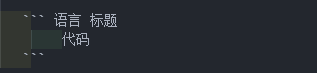

注意!本页面是一个测试页面!
对着文档尝试一下hexo的各种语法,以便后面参考.
——命起涟漪
测试天雷真君富兰克林，电炽恶魂爱迪生，磁暴魔王特斯拉，屏蔽尊者法拉第。 万法归一麦克斯韦，不准道人海森堡，虐猫狂人薛定谔，波粒双形爱因斯坦。 定量贤者普朗克，核链法师费米，五师寂灭钱学森，梨花老君杨振宁。 不动明王霍金，搅基大手谢尔顿，果蝇之王摩尔根，分裂之魏斯曼。 上帝之手达尔文，测日魔王伽利略， 面瘫战神马库斯，天相真君竺可桢 。 炼金术士诺贝尔，苹果天尊牛顿，杂交帝仙袁隆平，两弹天尊钱三强。 数论魔导华罗庚，金轮法王祖冲之，浑天大圣张衡，豌豆射手孟德尔。 青霉神医弗莱明，坐标道人笛卡尔，逢考必挂拉格朗日，放射女尊玛丽居里。 万物皆波德布罗伊，机佬祖师图灵，积分尊者莱布尼茨，一柱擎天阿基米德。 包治未病巴斯德，色影无忌达盖尔，胶体圣光丁达尔，十万个为什么盖提亚。 螺旋双杰沃森、克里克，神算子欧拉，采花大盗洛夫洛克，虚空教皇格罗滕迪克 全能使者外尔，真理操盘手希尔伯特，风流顽童费曼，元始天尊毕达哥拉斯。 量子尊师波尔，星轨法师开普勒，质量始尊希格斯，电动怪杰费恩曼。 超弦癫神爱威滕，熵统孤魂波兹曼，弱电破魔温伯格，铀散原力奥海默。 逆克乾坤沃泡利，未元武者威伦琴，万道归宗庞加莱，虚旋天罡狄拉克。 如来神展傅立叶，万能法师伯努利，肉山魔王小奥托，日心杀手哥白尼。 狗之梦魇巴甫洛夫，核弹天尊奥本海默，万磁王奥斯特，冲天道人万户。 萌菌战士巴斯德，万王之王伯纳斯李，测地真君李四光，几何魔君阿基米德。 重力常量卡文迪许，两弹元勋邓稼先，炼金近祖波义耳，元素召唤拉瓦锡。 三系魔导能斯特，玩蛋高手冯布劳恩，数理推手高斯，方块达人门捷列夫。 威泽使者帕斯卡，痘战胜佛琴纳，变换双煞傅里叶&拉普拉斯，转座子大轮王麦克林托克。 勾股圣手毕达哥拉斯，百算神童高斯，独眼大侠欧拉，微积刺客莱布尼茨。 曲面魔王黎曼，问题大叔希尔伯特，万理天尊牛顿，点兔成金斐波那契。 心灵捕手约翰纳什，大一梦魇吉米多维奇，比特居士香农，无限递归麦卡锡。 算法魔神高纳德，01精灵莱布尼兹，齿轮巨匠巴贝奇，纸带天尊图灵。 嗜蛙狂魔童第周，力场结界法拉第，骑塔天王伽里略，幻想花痴达芬奇。 无限罗汉布鲁诺，共振尊者赫姆赫兹，取肾狂魔乔布斯，乾坤挪移洛伦兹。
代码块:
代码块{% codeblock 标题 lang:语言 %} 代码 {% endcodeblock %}
测试代码console.log("hello world");
上面是hexo的内置语法,一切很好,只要你写的是JS/HTML或者别的语法,但是如果你写的是hexo的内置语法,比如
内置语法{% codeblock 标题 lang:语言 %} {% post_link 遺サレタ場所-斜光 %} {% endcodeblock %}
就会被错误地编译,示例如下:
错误示例<pre class="line-numbers language-语言" data-language="语言"><div class="caption"><span>标题</span></div><code class="language-语言"><a href="/2022/11/12/%E9%81%BA%E3%82%B5%E3%83%AC%E3%82%BF%E5%A0%B4%E6%89%80-%E6%96%9C%E5%85%89/" title="遺サレタ場所/斜光">遺サレタ場所/斜光</a> <span aria-hidden="true" class="line-numbers-rows"><span></span><span></span></span></code></pre>
可以使用md语法:
然而,除非特殊需求,不然还是使用hexo的内置语法吧.
引用文章:
引用文章{% blockquote 元代唐珙 《题龙阳县青草湖》 %} 醉后不知天在水，满船清梦压星河。 {% endblockquote %}
醉后不知天在水，满船清梦压星河。
引用推特:
引用推特{% blockquote @elonmusk https://twitter.com/elonmusk/status/1590986289033408512 %} Hit all-time high of active users today {% endblockquote %}
Hit all-time high of active users today
外链播放器代码:
外链播放器<iframe frameborder="no" border="0" marginwidth="0" marginheight="0" width=330 height=86 src="//music.163.com/outchain/player?type=2&id=4937720&auto=1&height=66"></iframe>
效果如文章开头
引用自己的文章:
自己的文章{% post_link 遺サレタ場所-斜光 %}
详情请看这篇文章:遺サレタ場所/斜光
接下来使用代码尝试插入一张图片
插入图片<img src="97224444_p0_master1200.jpg" width="390" height="600" title="お待たせしました" alt="お待たせしました">
效果:
图片没能显示的原因是编译之后，图片相对路径错误。
可以通过修改配置post_asset_folder: true，然后建立相对目录，获取相对路径.我比较懒，所以还是使用md的语法吧：
插入图片
卧槽,⚪!

插入视频演示:
插入youtube视频{% youtube sFqZHm6b3uU false %}
效果:
好嘛,上面的这句话依旧不好使,我思索了一下找不到问题出在哪.那就先手动使用下面这句吧
插入youtube视频<iframe src="//www.youtube.com/embed/sFqZHm6b3uU" frameborder="0" loading="lazy" allowfullscreen></iframe>
是WWK!~
最后展示一下我的代码段:
代码片段{% include_code lang:javascript from:3 to:15 TestCode.js %}
TestCode.jsview raw* @Date: 2022-11-13 11:40:29 * @Last Modified by: NoRain * @Last Modified time: 2022-11-13 11:53:41 */ class TestCode { index = 0; init() { console.log("hello world"); } open() { this.index++; console.log(`open第${this.index}次`); }
先到这里吧,吃饭去.